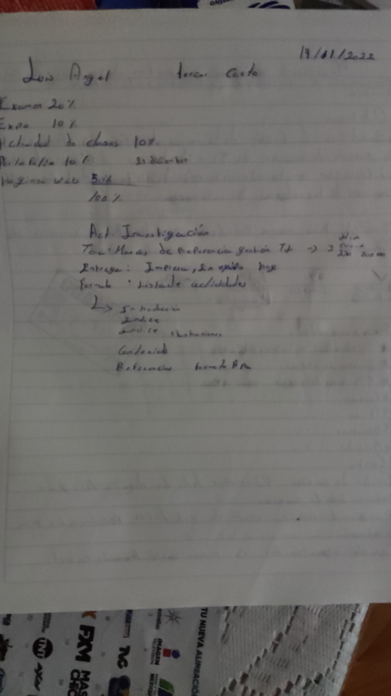

1.- tecnologias de información y estrategias emppresariales
2.- cuadro comparativo de antes y despues de las tecnologias de un cine
 .
.
Evaluacion de los servidores de TI
Investigación
 .
.
Investigación objetivos estrategicos
Registro de negocios (BPM)

Alineación de los servicios
Diacnosticos y alineaciones
SEGUNDO CORTE
Alberto Makeinsy


funcion y administracion de datos


Gobiernos de las TI
Brayan Flores


Juan Francisco g.b.

Gobiernos de TI

Infrestructura de informacion, marco de gobierno de tecnologias

Fundamentos de la investigacion 2.3
